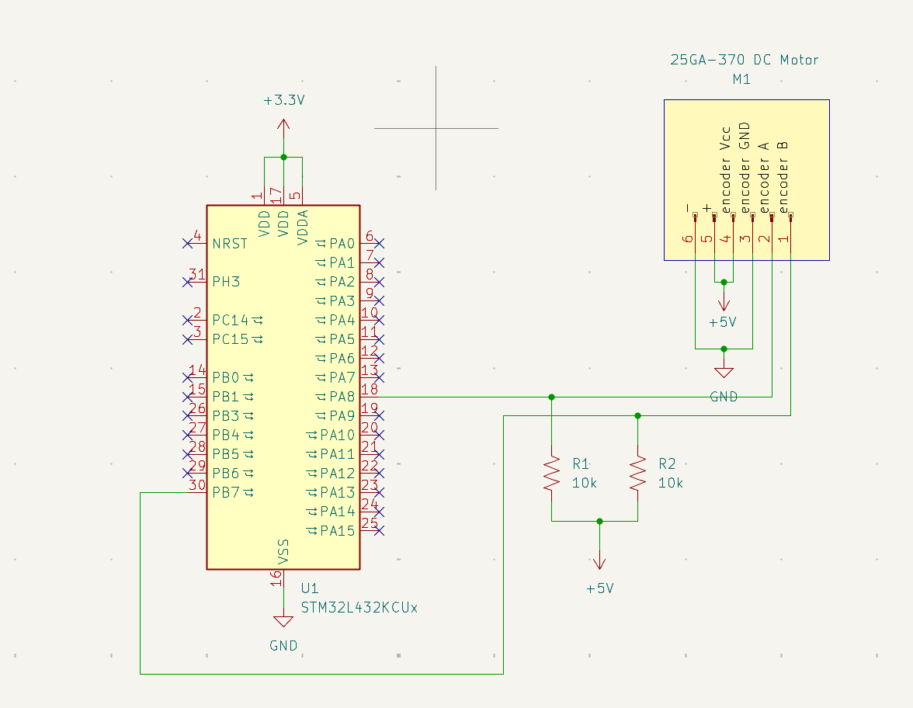
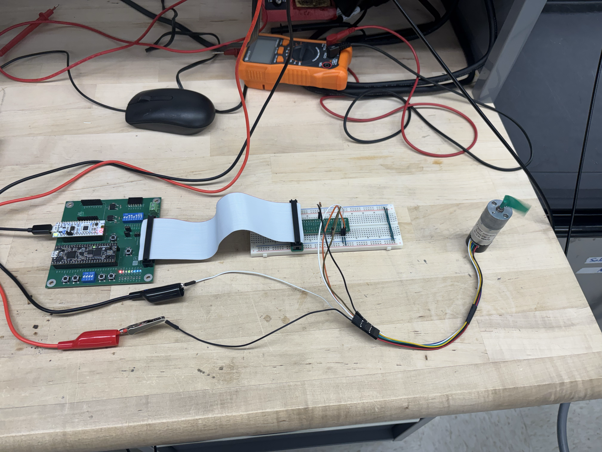
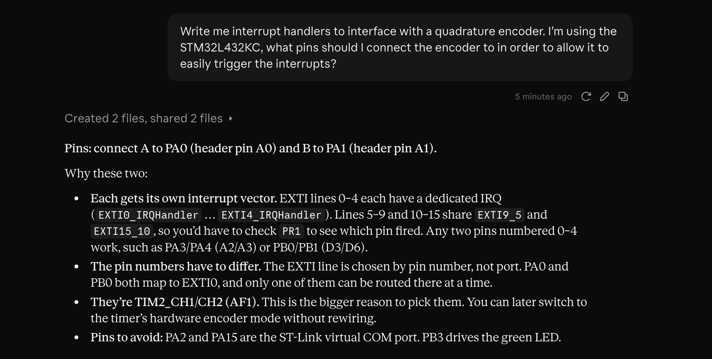
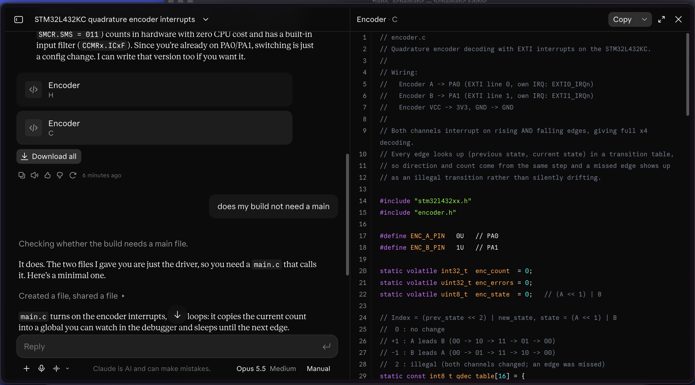

Lab 5 — Quadrature Encoder Velocity: Interrupt-Driven Motor Speed Measurement
Introduction
Lab 5 uses the Nucleo-L432KC’s STM32L432KC MCU to measure the angular velocity of a 25GA-370 brushed DC motor via its attached 2-channel Hall-effect quadrature encoder. The design constraint that shapes the entire lab is that all peripheral register access must be written by hand from RM0394 — i.e. no CMSIS headers. For this design, EXTI line-interrupts on both encoder channels (PA8 for A, PB7 for B) feed a 16-entry lookup-table quadrature decoder running inside ‘EXTI9_5_IRQHandler’ that increments/decrements a free-running edge counter. TIM6 generates a 10 Hz sampling tick by polling its update-event flag, and the main loop snapshots the counter each tick, computes rev/s in integer milli-rev units, and streams a live-updating ‘direction = F/R speed = X.XXX rev/s’ line over USART2 → ST-Link.
Design and Testing Methodology
The design decomposes into six register-level driver files plus a shared register header. ‘stm32l432_registers.h’ defines ‘GPIO_TypeDef’, ‘BASIC_TIM_TypeDef’, ‘SYSCFG_TypeDef’, ‘EXTI_TypeDef’, and ‘USART_TypeDef’ structs laid out to mirror the register offsets outlined in the reference manual, plus base-address ’#define’s for every peripheral.
Register layer (‘stm32l432_registers.h’)
Each peripheral is a ‘typedef struct’ of ‘volatile uint32_t’ fields whose layout matches RM0394’s register offsets exactly. Reserved slots are included where registers are skipped preserving field alignment so that a write to ‘EXTICR2’ lands at physical address ‘SYSCFG_BASE + 0x0C’. Base pointers are ‘static const’-equivalent ’#define’s (’GPIOA ((GPIO_TypeDef *) 0x48000000UL)‘, etc.). The four RCC enable registers that only need bit-level writes (’RCC_AHB2ENR’, ‘RCC_APB1ENR1’, ‘RCC_APB2ENR’, ‘NVIC_ISER0’) are declared as direct-address ‘((volatile uint32_t )…)’ macros rather than struct fields.
GPIO initialization (‘gpio_init_all’)
Enables ‘GPIOAEN’ and ‘GPIOBEN’ in ‘RCC_AHB2ENR’, then configures three pins: PA2 to alternate function 7 (USART2_TX) via ‘MODER[5:4] = 10’ and ‘AFRL[11:8] = 7’; PA8 as input with internal pull-up via ‘MODER[17:16] = 00’ and ‘PUPDR[17:16] = 01’; PB7 identically via ‘MODER[15:14]’ and ‘PUPDR[15:14]’. The pull-ups guard against open-drain-style encoder outputs or long-wire ringing.
EXTI routing (‘exti_init’)
Enables ‘SYSCFGEN’ in ‘RCC_APB2ENR’, then routes PA8 → EXTI line 8 by clearing ‘SYSCFG_EXTICR3[3:0]’ (port A is the reset default) and PB7 → EXTI line 7 by writing ‘SYSCFG_EXTICR2[15:12] = 0001’ (port B). Both edges on both lines are enabled via ‘EXTI_RTSR1’ and ‘EXTI_FTSR1’ bits 7 and 8, achieving 4× quadrature resolution. Stale pending bits are cleared by writing ‘1’ to ‘EXTI_PR1[7]’ and ‘[8]’ (W1C), the lines are unmasked in ‘EXTI_IMR1’, and the shared EXTI9_5 interrupt is enabled in the NVIC by setting bit 23 of ‘NVIC_ISER0’.
Quadrature decoder (‘encoder.c’)
The LUT indexes on a packed 4-bit state ‘(prev_AB << 2) | current_AB’ and returns an ‘int8_t’ of -1, 0, or +1:
static const int8_t encoder_lut[16] = {
0, -1, +1, 0, // prev = 00
+1, 0, 0, -1, // prev = 01
-1, 0, 0, +1, // prev = 10
0, +1, -1, 0 // prev = 11
};Zeros appear on the diagonal (no state change, ‘prev == now’) and on the anti-diagonal (illegal transitions where both bits flip simultaneously, treated as a missed intermediate state). ‘EXTI9_5_IRQHandler’ clears the PR1 bits first, reads ‘GPIOA->IDR’ bit 8 and ‘GPIOB->IDR’ bit 7 to form ‘current’, indexes the LUT, adds the result to a ‘static volatile int32_t edge_count’, and updates ‘prev_AB’. ‘encoder_capture’ is the “Option B” free-running-counter pattern: it loads ‘edge_count’ atomically (ARM Cortex-M4 32-bit aligned loads are single-cycle atomic), subtracts a ‘static int32_t prev_cap’, stores the new baseline, and returns the delta — no interrupt-disable critical section needed.
TIM6 10 Hz tick (‘tim6.c’)
Enables ‘TIM6EN’ in ‘RCC_APB1ENR1’, programs ‘PSC = 3999’ and ‘ARR = 99’ so the update event fires every ‘(3999+1)(99+1)/4,000,000 s = 100 ms = 10 Hz’, pulses ‘EGR.UG’ to load the shadow registers, clears the resulting spurious ‘UIF’, and starts the counter via ‘CR1.CEN’. ‘tim6_wait_tick’ spin-polls ‘SR.UIF’ and clears it when set. Polling is used rather than an interrupt because the main loop has no other work during the wait.
USART2 serial output (‘uart.c’)
Enables ‘USART2EN’ in ‘RCC_APB1ENR1’, writes ‘BRR = 417’ (‘f_CK / baud = 4,000,000 / 9600 = 416.67 ≈ 417’), then enables ‘TE’ and ‘UE’ in ‘CR1’. ‘uart_putc’ spin-polls the ‘ISR.TXE’ flag before writing to ‘TDR’. ‘uart_print’ walks a null-terminated string. ‘uart_print_int’ handles signed decimal via a scratch buffer and least-significant-digit-first construction, emitted in reverse.
main loop (‘main.c’)
After init in the dependency-safe order ‘gpio_init_all → encoder_init → exti_init → tim6_init → uart_init’ (encoder before EXTI so ‘prev_AB’ is seeded before the ISR can fire; UART last so a successful welcome print confirms end-to-end bring-up), the loop waits on ‘tim6_wait_tick’, snapshots ‘encoder_capture’, scales to milli-rev/s via ‘rev_mill = (capture * 10000) / ENCODER_EDGES_PER_REV’ (the extra ‘10×’ accounts for the 100 ms window instead of 1 s), splits sign from magnitude, and prints ‘direction = F/R speed = X.XXX rev/s’.
Technical Documentation
The source code for the project can be found in the ‘/labs/lab5/mcu/’ directory of the associated GitHub repository.
Documentation
Schematic

Register Map Summary
| Peripheral | Base | Register | Offset | Purpose |
|---|---|---|---|---|
| RCC | 0x40021000 | AHB2ENR | 0x4C | GPIOAEN (bit 0), GPIOBEN (bit 1) |
| APB1ENR1 | 0x58 | TIM6EN (bit 4), USART2EN (bit 17) | ||
| APB2ENR | 0x60 | SYSCFGEN (bit 0) | ||
| GPIOA (AHB2) | 0x48000000 | MODER | 0x00 | PA2 AF / PA8 input |
| PUPDR | 0x0C | PA8 pull-up | ||
| IDR | 0x10 | PA8 state read | ||
| AFRL | 0x20 | PA2 AF = 7 (USART2_TX) | ||
| GPIOB (AHB2) | 0x48000400 | MODER | 0x00 | PB7 input |
| PUPDR | 0x0C | PB7 pull-up | ||
| IDR | 0x10 | PB7 state read | ||
| SYSCFG (APB2) | 0x40010000 | EXTICR2 | 0x0C | EXTI7 → port B (bits [15:12] = 0001) |
| EXTICR3 | 0x10 | EXTI8 → port A (bits [3:0] = 0000, default) | ||
| EXTI (APB2) | 0x40010400 | IMR1 | 0x00 | Unmask lines 7 and 8 |
| RTSR1 | 0x08 | Rising edge on lines 7 and 8 | ||
| FTSR1 | 0x0C | Falling edge on lines 7 and 8 | ||
| PR1 | 0x14 | Pending bit (W1C) for lines 7 and 8 | ||
| NVIC | 0xE000E100 | ISER0 | 0x00 | Enable IRQ 23 (EXTI9_5) |
| TIM6 (APB1) | 0x40001000 | CR1 | 0x00 | Counter enable (bit 0) |
| SR | 0x10 | Update flag UIF (bit 0) | ||
| EGR | 0x14 | Update generation UG (bit 0) | ||
| PSC | 0x28 | Prescaler = 3999 | ||
| ARR | 0x2C | Auto-reload = 99 (10 Hz) | ||
| USART2 (APB1) | 0x40004400 | CR1 | 0x00 | TE (bit 3), UE (bit 0) |
| BRR | 0x0C | Baud divisor = 417 (9600 baud @ 4 MHz) | ||
| ISR | 0x1C | TXE (bit 7) | ||
| TDR | 0x28 | Transmit data |
Quadrature decoding math
The 25GA-370 datasheet specifies 12 pulses per motor-shaft revolution per channel and a 1:10 gear reduction, giving 120 pulses per output-shaft revolution per channel. With 4× quadrature decoding (both edges on both channels), each output-shaft revolution generates:
\[ \text{edges/rev} = 12 \text{ PPR}_{\text{motor}} \times 10 \text{ (gear)} \times 4 \text{ (quadrature)} = 480 \]
At 10 Hz sampling (100 ms window), the per-window edge count scales to rev/s as:
\[ \text{rev/s} = \frac{\text{edges}_{100\text{ms}} \times 10}{480} \]
Multiplying by 1000 first for milli-rev precision and using integer division gives the final integer-only computation:
rev_mill = (capture * 10000) / 480; // units: milli-rev/sOverflow sanity: at the 25GA-370’s ~10 rev/s maximum at 12 V, capture per 100 ms window ≈ 48 edges, and ‘48 × 10000 = 480,000’ is well within ‘int32_t’ range.
ISR timing
At MSI 4 MHz, each clock cycle is 250 ns. A typical EXTI9_5 ISR entry/exit on Cortex-M4 costs ~24 cycles, and the handler body (PR1 clear, two IDR reads, LUT index, ‘edge_count’ update, ‘prev_AB’ assign) adds ~30-50 cycles — total ~15-20 μs per ISR firing. At the measured ~910 Hz edge rate, inter-edge spacing is ~1 ms, giving a comfortable 50× margin before ISR overhead becomes a bottleneck.
Results and Discussion
Live Terminal Output
With the design complete, flashed, and the motor driven at ~5 V, terminal emulator shows a single-line in-place updating at 10 Hz. Direction character toggles cleanly as the shaft reverses, and the speed figure stabilizes within one or two sample windows of a load change. The ‘E155 Lab 5: Quadrature Encoder Velocity’ welcome banner remains visible on the line above the updating status line.
Hardware

Summary & Conclusion
The design meets every Proficiency requirement in the Lab 5 spec: the MCU reads a 2-channel quadrature encoder on a brushed DC motor via EXTI interrupts, decodes direction and magnitude from the quadrature state transitions, and displays signed rotational velocity in rev/s on the host terminal at ≥1 Hz. All register access is hand-written from RM0394 with no CMSIS headers, and every register field plus every ISR-shared variable is declared ‘volatile’. Excellence-tier work adds 4× quadrature resolution, a 10 Hz sampling rate, and an in-place-updating single-line display.
This submission meets every Proficiency requirement in the Lab 5 spec and includes 4× quadrature decoding, a 10 Hz sampling window, and an in-place-updating terminal display for Excellence credit.
AI Prototype Summary
Prompting Conversation
[Design discussion]:

[Debugging trace]:

Reflection
The opening prompt — “Write me interrupt handlers to interface with a quadrature encoder. I’m using the STM32L432KC, what pins should I connect the encoder to in order to allow it to easily trigger the interrupts?” — produced a response with three concrete recommendations: use PA0 and PA1 (header pins A0/A1), rely on dedicated EXTI0 and EXTI1 interrupt vectors so no PR1 dispatch is needed inside the ISR, and decode both edges on both channels through a single lookup table for 4× resolution. The AI also flagged that PA0/PA1 double as TIM2_CH1/CH2 on AF1, which would let the design later swap the software decoder for TIM2’s hardware encoder mode without rewiring, and warned off PA2/PA15 (ST-Link VCOM) and PB3 (green LED).
Two pieces of that insight transfer into the final design: the “pin numbers must differ” rule, since the EXTI line is selected by pin number (not port) and PA0/PB0 collide on EXTI0; and the 4×-via-LUT decode, which is exactly what ‘encoder_lut[16]’ does. The pin recommendation itself was not followed. Channels A and B were routed to PA8 and PB7 instead of PA0/PA1, for two practical reasons. First, PA8 and PB7 are 5V-tolerant (FT) and sit on headers already broken out by the E155 dev board, whereas running the encoder’s open-drain lines to PA0/PA1 would have been a longer jumper path.
Hours spent
- Manual search through RM0394 (EXTI, SYSCFG, NVIC, TIM6, USART2) + 25GA-370 datasheet: 4h
- Writing up C files: 6h
- SES project setup, J-Link firmware conversion, flash chain bring-up: 2h
- Hardware wiring and setup: 2h
- Report writeup, schematic drawing, and documentation: 4h
- Total: 18 hours